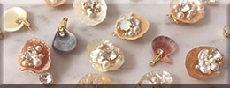
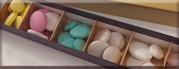
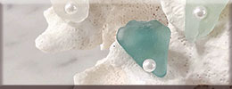

petite58 Designs made from genuine #seashells #stones #leather Love nature,shell addict★ Itoshima,Fukuoka. CONCEPT 天然の貝殻を加工したパーツや、 レザーで加工したボタンなど オリジナルのパーツを中心に アクセサリーを製作しています。 貝殻のパーツについては、 加工する際に透明の樹脂を使用しており、 そのため貝の色も全て自然の色です。 素材を楽しみながら 身につけていただけるアクセサリーを心がけて 一つずつ手作りしております。 ITEM  Shellflower and pearl  Leatherbutton  Seacandy